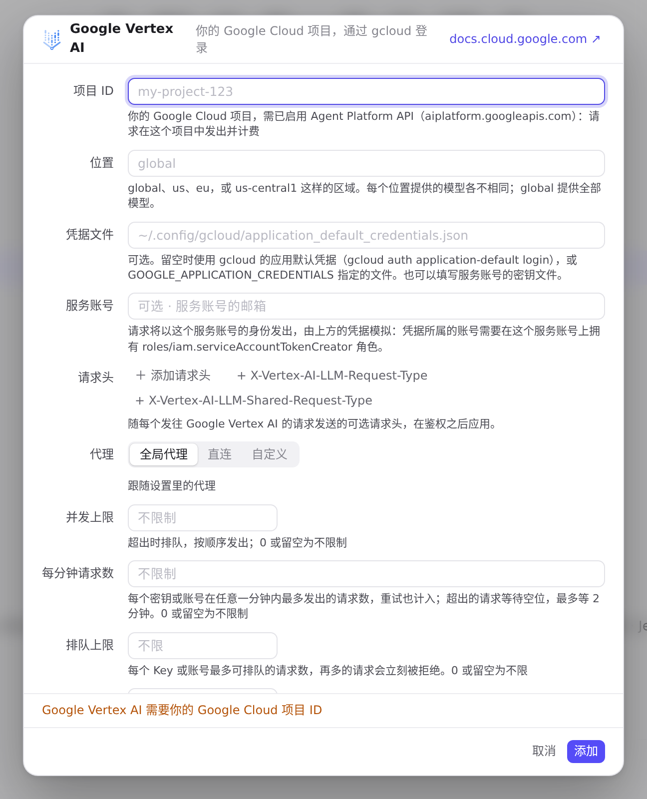
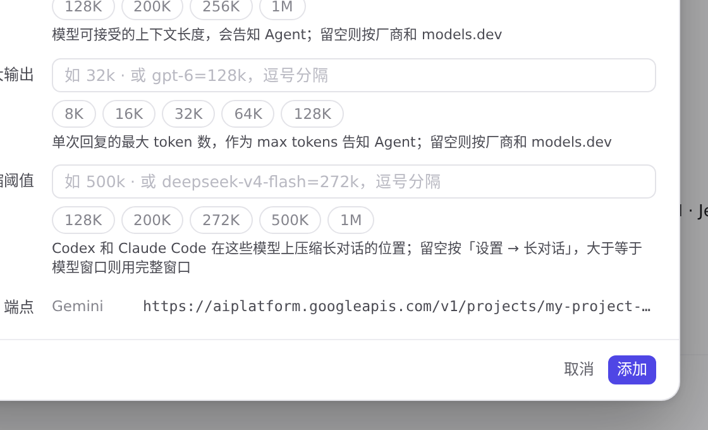
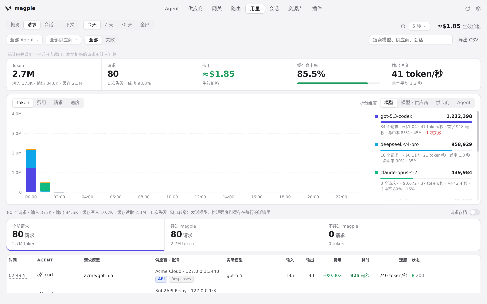

#1122 界面预览
commit 7ec81c8 · 回到 PR · 供应商的预设里新增 Google Vertex AI：添加它时编辑器以「项目 ID / 位置 / 凭据文件 / 服务账号」代替 API 密钥，未填项目 ID 保存会被拒绝，填好后端点处出现由项目与位置拼出的地址，保存后这一行以凭据文件或「Google ADC」作胶囊。用量 → 请求的协议标签对 Gemini 的路径改为不区分大小写。
红线是鼠标走过的轨迹，红色圆环是一次点击；底部文字是这一步在做什么。空格暂停，← → 逐段查看。
 添加 Google Vertex AI 供应商 · 「添加供应商」的预设列表
添加 Google Vertex AI 供应商 · 「添加供应商」的预设列表
 添加 Google Vertex AI 供应商 · Google Vertex AI 的编辑器：项目 ID、位置、凭据文件、服务账号
添加 Google Vertex AI 供应商 · Google Vertex AI 的编辑器：项目 ID、位置、凭据文件、服务账号

添加 Google Vertex AI 供应商 · 未填项目 ID 时点「添加」后的编辑器

添加 Google Vertex AI 供应商 · 填好项目 ID 后编辑器里出现的端点
 添加 Google Vertex AI 供应商 · 保存后的供应商列表
添加 Google Vertex AI 供应商 · 保存后的供应商列表

用量 → 请求的协议标签 · 每条请求的协议标签